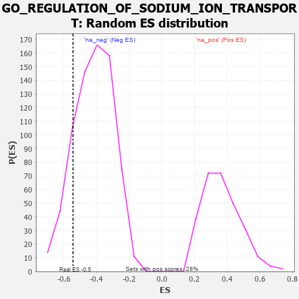

| | | Dataset | 7d |
| Phenotype | NoPhenotypeAvailable |
| Upregulated in class | na_neg |
| GeneSet | GO_REGULATION_OF_SODIUM_ION_TRANSPORT |
| Enrichment Score (ES) | -0.5439682 |
| Normalized Enrichment Score (NES) | -1.3003412 |
| Nominal p-value | 0.15577191 |
| FDR q-value | 0.47080827 |
| FWER p-Value | 1.0 |
Table: GSEA Results Summary
 Fig 1: Enrichment plot: GO_REGULATION_OF_SODIUM_ION_TRANSPORT
Fig 1: Enrichment plot: GO_REGULATION_OF_SODIUM_ION_TRANSPORT
Profile of the Running ES Score & Positions of GeneSet Members on the Rank Ordered List
| PROBE | GENE SYMBOL | GENE_TITLE | RANK IN GENE LIST | RANK METRIC SCORE | RUNNING ES | CORE ENRICHMENT | | 1 | AKT1 | | | 1040 | 0.476 | -0.0802 | No |
| 2 | SLMAP | | | 1744 | 0.346 | -0.1317 | No |
| 3 | CHP1 | | | 3089 | 0.138 | -0.2859 | No |
| 4 | WNK3 | | | 4153 | -0.034 | -0.4159 | No |
| 5 | ADRB2 | | | 4352 | -0.068 | -0.4335 | No |
| 6 | P2RX4 | | | 4813 | -0.161 | -0.4742 | No |
| 7 | DLG1 | | | 4860 | -0.169 | -0.4620 | No |
| 8 | DRD2 | | | 5088 | -0.221 | -0.4670 | No |
| 9 | WNK1 | | | 5650 | -0.362 | -0.4990 | Yes |
| 10 | NETO2 | | | 6009 | -0.475 | -0.4935 | Yes |
| 11 | STK39 | | | 6274 | -0.563 | -0.4669 | Yes |
| 12 | ARF1 | | | 6583 | -0.701 | -0.4311 | Yes |
| 13 | GPD1L | | | 7343 | -1.215 | -0.3974 | Yes |
| 14 | ANK3 | | | 7690 | -1.740 | -0.2560 | Yes |
| 15 | CAV3 | | | 7896 | -2.739 | 0.0094 | Yes |
Table: GSEA details [plain text format]

Fig 2: GO_REGULATION_OF_SODIUM_ION_TRANSPORT: Random ES distribution
Gene set null distribution of ES for GO_REGULATION_OF_SODIUM_ION_TRANSPORT